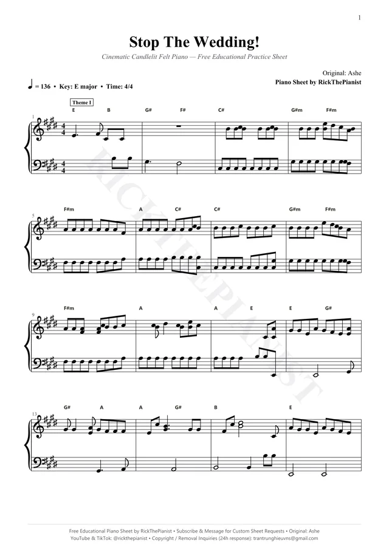

Stop The Wedding! — Piano Chords & Musical Breakdown
Learn how to play Stop The Wedding! by Ashe in a soothing solo felt piano arrangement set in E major at 136 BPM (4/4 time, 56 bars, approx. 3:18). Below you will find the exact chord progression extracted directly from our score, keyboard pitch range (C#2 to E5), and a structured practice plan synced with our YouTube falling-notes tutorial.
How to Play Stop The Wedding! on Piano (Step-by-Step Felt Piano Guide)
- Master the Harmony First (E major): Block the core chords (E, B, G#, F#, C#, G#m, F#m, A) slowly with your left hand before playing broken arpeggios. Knowing every harmonic anchor inside the 56-bar structure removes hesitation when reading or memorizing.
- Three-Speed Tempo Ladder: Begin hands separately at 88 BPM (65% speed), join both hands cleanly at 116 BPM (85%), and only approach the full 136 BPM pulse once every phrase transitions smoothly without tension.
- Cantabile Right-Hand Voicing & Felt Dynamics: Keep your right-hand melody expressive and singing (piano to mezzo-forte) while keeping inner chords and left-hand bass (C#2–E5 range) roughly 25% softer so the tune floats clearly like an intimate felt Steinway recording.
- Clean Harmonic-Root Pedaling (CC64): Lift and re-depress the sustain pedal right after every bass root change rather than holding it across contrasting chords. Watch the synced falling-notes performance on YouTube at 0.75× speed to mirror exact phrasing and rubato breaths.
Frequently Asked Questions — Stop The Wedding! Piano
What key and tempo is Stop The Wedding! on piano?
Our solo felt piano arrangement of Stop The Wedding! (Ashe) is set in E major at 136 BPM in 4/4 time, spanning 56 measures (about 3:18) across the piano range C#2 to E5.
What are the main piano chords in Stop The Wedding!?
The core harmonies extracted from our score include E, B, G#, F#, C#, G#m, F#m, A. A typical opening progression runs E - B - G# - F# - C# - G#m - F#m - A. You can inspect fingerings or shift keys instantly using our free Piano Chord Finder & Transposer tool.
How difficult is Stop The Wedding! to play on piano?
This arrangement is rated Intermediate. Start hands separately at 88 BPM (65% tempo), connect hands at 116 BPM with root-change sustain pedaling, and only increase toward 136 BPM once the melody sings cleanly above the left hand.
How do I get the sheet music or tutorial for Stop The Wedding!?
Stop The Wedding! by Ashe is a modern copyrighted composition, so we provide a free educational piano tutorial, verified chord progression, key/BPM breakdown, and two-hand practice guide on this page (with direct falling-notes video playback on YouTube @rickthepianist). For instant US Letter & A4 printable PDFs, you can also grab our 100% legal Free 11-Song Classical & Christmas PD Pack.